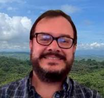
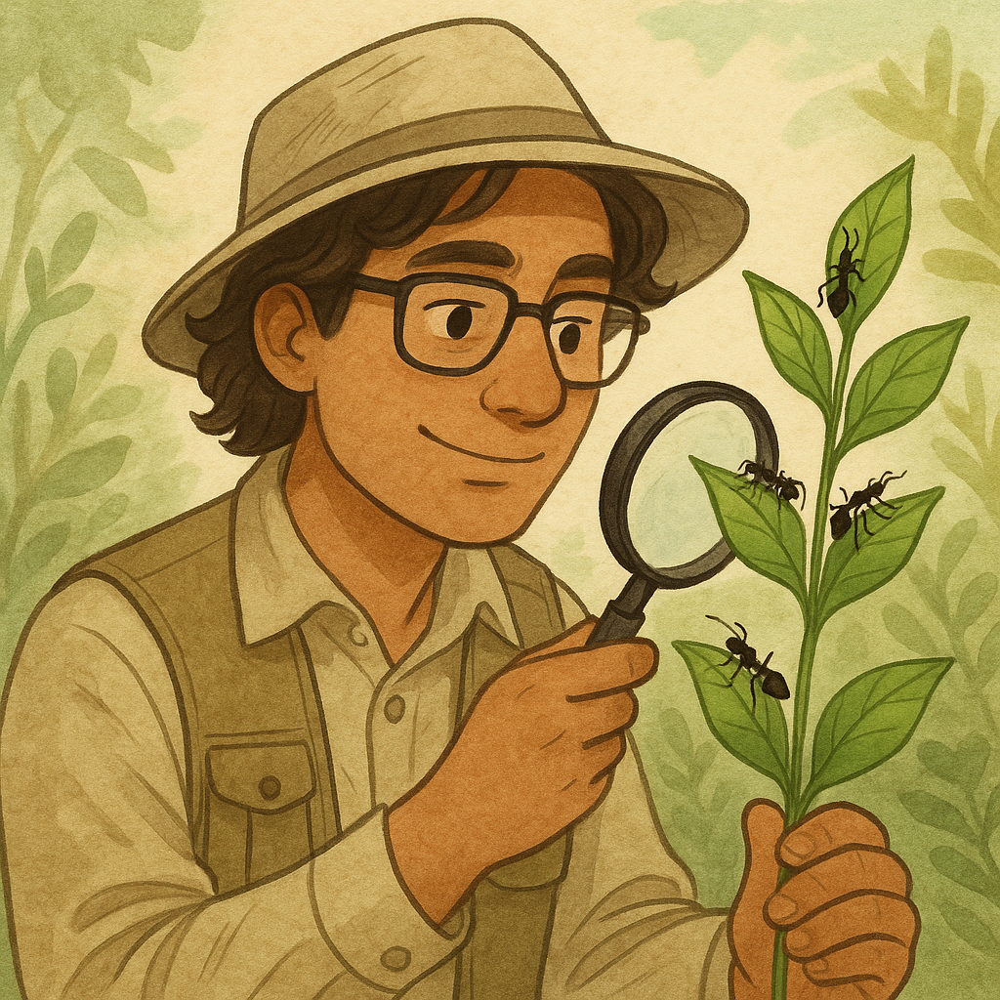
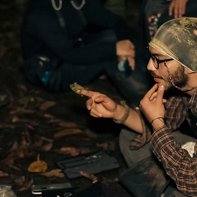
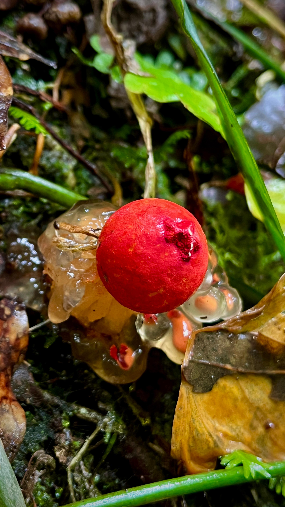
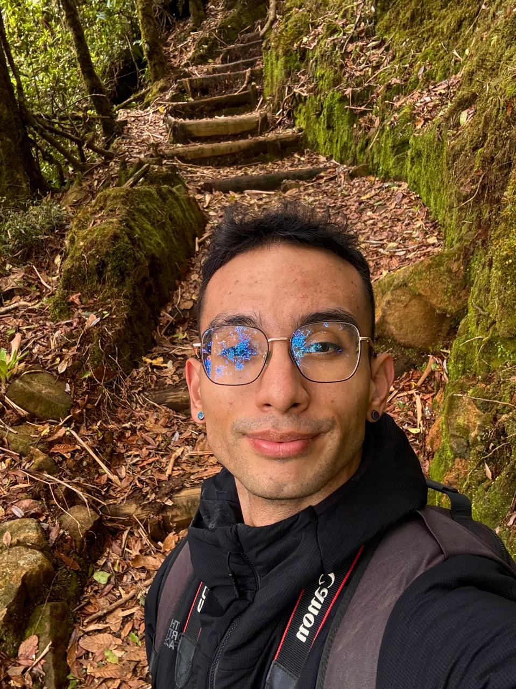

B0305 - LABORATORIO DE ECOLOGÍA GENERAL
📑 Laboratorio de Ecología General - 2025
(01/08/2025)
- ¡🗓️ Material de la semana 01 ya está disponible!
Introducción
La ecología es una ciencia integradora que abarca una amplia gama de ramas de la biología. Originalmente definida por Ernest Haeckel (1834–1919) como el estudio de las interacciones entre los organismos y su ambiente, en la actualidad esta definición se ha ampliado para incluir el análisis de cómo dichas interacciones afectan la distribución y abundancia de las especies, así como el funcionamiento de los ecosistemas (Andrewartha 1970).
Esta definición implica el estudio de una gran variedad de procesos. El ambiente de un organismo incluye desde las características físicas del entorno y la presencia de otros seres vivos, hasta el entorno celular y genético en el que se desarrollan sus funciones vitales. Las interacciones, entendidas como el intercambio de materia y energía, tienen lugar a través de múltiples escalas: entre organismos, entre organismos y su entorno (dentro de ecosistemas), e incluso entre distintos ecosistemas. A su vez, los ecosistemas pueden definirse de diversas escalas según el enfoque del estudio, abarcando desde el microbioma intestinal de un animal hasta el planeta entero considerado como un sistema ecológico.
La ecología permite estudiar a los organismos a nivel individual, poblacional y comunitario, así como su relación con el ambiente y su función dentro del ecosistema. Por lo tanto, su enfoque es multidisciplinario y jerárquico.
La práctica ecológica se basa en la aplicación del método científico hipotético-deductivo. Este método incluye la observación de patrones en la naturaleza, la formulación de hipótesis que los expliquen, el desarrollo de predicciones derivadas de esas hipótesis, y el diseño de experimentos que permitan evaluarlas mediante el análisis de datos. Si los resultados concuerdan con las predicciones, se considera que existe evidencia suficiente para no rechazar la hipótesis. En ciencia, sin embargo, una hipótesis es siempre una explicación tentativa y nunca definitiva; permanece sujeta a evaluación constante, nuevas pruebas y revisión frente a la evidencia disponible. El avance científico se da a través de la formulación de nuevos paradigmas, es decir, marcos teóricos compuestos por hipótesis que han resistido la prueba empírica y que eventualmente son reemplazados por otros más generales, capaces de explicar una mayor diversidad de fenómenos con un mayor respaldo empírico.
En este curso, las personas estudiantes desarrollarán la capacidad de diseñar experimentos para poner a prueba hipótesis. Asimismo, deberán adquirir destrezas en el uso de equipo científico, la recolección de datos en campo y laboratorio, y el manejo de técnicas estadísticas apropiadas para analizar esos datos, extraer conclusiones lógicas y comunicar sus resultados a diferentes audiencias. Como en toda ciencia, la ecología avanza a través de la divulgación de sus hallazgos; por tanto, parte esencial del aprendizaje será adquirir las habilidades necesarias para presentar resultados y explicaciones mediante reportes y exposiciones orales.
Descripción y objetivos del curso
El Laboratorio de Ecología General complementa el curso de teoría con prácticas en el campo y el laboratorio. Al finalizar el curso de laboratorio de Ecología General se espera que la persona estudiante sea capaz de:
Objetivo general
Desarrollar habilidades para plantear, diseñar y ejecutar investigaciones de campo y laboratorio en ecología tropical, aplicando los conceptos teóricos aprendidos en el curso y enfocándose en la prueba de hipótesis mediante el método científico.
Objetivos específicos
- Aprender a formular hipótesis biológicas y predicciones a partir de patrones observados en la naturaleza o en la literatura científica.
- Desarrollar investigaciones en campo y laboratorio utilizando el diseño experimental y poniendo a prueba hipótesis ecológicas.
- Aplicar herramientas estadísticas básicas y redactar informes científicos que comuniquen claramente los resultados obtenidos.
Conocimientos
- Componentes básicos de un diseño experimental.
- Aplicar pruebas estadísticas básicas.
- Generar hipótesis y predicciones claras.
- Conocer los principios de operación de equipo básico de investigación ecológica.
- Ser capaces de escribir artículos científicos.
- Buscar, comprender, analizar y citar correctamente la literatura científica.
Habilidades
- Desarrollar la capacidad de observación científica en contextos naturales.
- Formular hipótesis biológicas y predicciones con base en patrones observados en la naturaleza o descritos en la literatura científica.
- Plantear, diseñar y ejecutar investigaciones de campo y laboratorio para poner a prueba hipótesis ecológicas.
- Utilizar equipo básico de investigación en ecología tropical.
- Aplicar técnicas básicas de muestreo ecológico, como el uso de cuadrantes, transectos y estrategias de muestreo aleatorio o sistemático.
- Realizar análisis estadísticos apropiados para interpretar datos ecológicos.
- Analizar e interpretar resultados científicos para generar nuevo conocimiento.
- Redactar reportes científicos de manera clara y estructurada.
- Comunicar resultados de investigación mediante presentaciones orales.
- Localizar, seleccionar, analizar y citar literatura científica relevante.
Aptitudes
- Trabajar en equipo y colaborar de manera efectiva en proyectos de investigación.
- Comprender y aplicar principios de ética científica, incluyendo el reconocimiento y prevención del plagio, así como el uso ético de herramientas de IA.
- Actuar con responsabilidad ética en la recolección, manejo y análisis de datos.
- Mostrar compromiso y dedicación para alcanzar objetivos y completar las fases del trabajo de campo.
- Fomentar la curiosidad científica como motor del aprendizaje y la investigación.
- Evaluar riesgos y aplicar medidas de seguridad durante las actividades de campo.
🧑🏻🏫 Equipo docente

Gerardo Avalos
Profesor
UCR
📧
Horas consulta:
- Cuándo: A convenir
- Cómo reservar: faetornis@gmail.com
Teofil Nakov
Profesor
UCR
📧
Horas consulta:
- Cuándo: A convenir
- Cómo reservar: teofiln@gmail.com

Kenlly Pérez
Murciélagos
Kenneth Barrantes
Plantas

Daniel Espitia
Herpetofauna
📧

Valeria Acevedo Fernández
Micología
📧

David Campos
Neurobiologia y comportamiento
📧
📍 Clase
Viernes 8:00-10:50 am en BI 0110
💻 Grupos de clase
Grupo 01
- 📆 Viernes
- ⌚ 08:00 - 10:50
- 📍 BI 0110